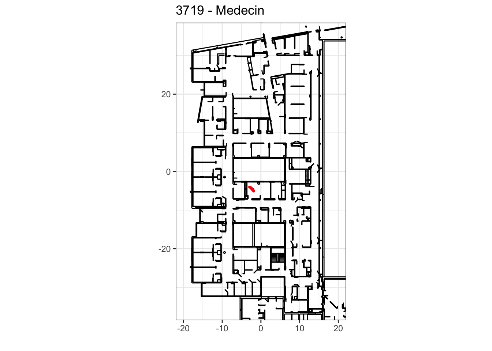
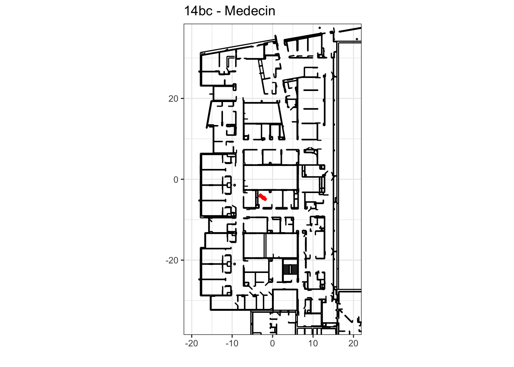
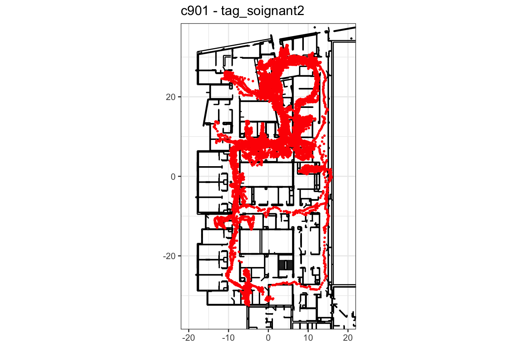

2022-01-02
Last updated: 2022-01-03
Checks: 7 0
Knit directory: Test/
This reproducible R Markdown analysis was created with workflowr (version 1.6.2). The Checks tab describes the reproducibility checks that were applied when the results were created. The Past versions tab lists the development history.
Great! Since the R Markdown file has been committed to the Git repository, you know the exact version of the code that produced these results.
Great job! The global environment was empty. Objects defined in the global environment can affect the analysis in your R Markdown file in unknown ways. For reproduciblity it’s best to always run the code in an empty environment.
The command set.seed(20210926) was run prior to running the code in the R Markdown file. Setting a seed ensures that any results that rely on randomness, e.g. subsampling or permutations, are reproducible.
Great job! Recording the operating system, R version, and package versions is critical for reproducibility.
Nice! There were no cached chunks for this analysis, so you can be confident that you successfully produced the results during this run.
Great job! Using relative paths to the files within your workflowr project makes it easier to run your code on other machines.
Great! You are using Git for version control. Tracking code development and connecting the code version to the results is critical for reproducibility.
The results in this page were generated with repository version 0798acf. See the Past versions tab to see a history of the changes made to the R Markdown and HTML files.
Note that you need to be careful to ensure that all relevant files for the analysis have been committed to Git prior to generating the results (you can use wflow_publish or wflow_git_commit). workflowr only checks the R Markdown file, but you know if there are other scripts or data files that it depends on. Below is the status of the Git repository when the results were generated:
Ignored files:
Ignored: .DS_Store
Ignored: .Rhistory
Ignored: .Rproj.user/
Ignored: data/.DS_Store
Ignored: data/Stabiliseur/
Ignored: data/json/
Ignored: data/plan/
Ignored: figure/
Ignored: workflowr.R
Note that any generated files, e.g. HTML, png, CSS, etc., are not included in this status report because it is ok for generated content to have uncommitted changes.
These are the previous versions of the repository in which changes were made to the R Markdown (analysis/2022-01-02.Rmd) and HTML (docs/2022-01-02.html) files. If you’ve configured a remote Git repository (see ?wflow_git_remote), click on the hyperlinks in the table below to view the files as they were in that past version.
| File | Version | Author | Date | Message |
|---|---|---|---|---|
| html | 0798acf | cfcforever | 2022-01-03 | Build site. |
| Rmd | f3f4823 | cfcforever | 2022-01-03 | add new analysis |
load data.json
today = "2022-01-02"
cat("data on:", today, "\n")data on: 2022-01-02 json_data = fromJSON(file = paste0("data/json/", today, "/position.json"))
cat("Total collected positions: ", length(json_data), "\n")Total collected positions: 824829 tagId_seq = unlist(lapply(json_data, function(x){x["tag_id"][[1]]}))
tagId = unique(tagId_seq)
nb_tag = length(tagId)
cat(nb_tag, "Tags are: ", tagId, "\n")24 Tags are: 1a04 19ab c901 38d7 4258 1a0a 4585 67cf 2f40 436d 3719 4596 3722 181b 14bc 2f7b 373f 2e56 2b9c 44e0 3721 4288 460b 4273 table(tagId_seq)tagId_seq
14bc 181b 19ab 1a04 1a0a 2b9c 2e56 2f40 2f7b 3719 3721
1909 27021 422665 88788 91848 924 2665 3186 5146 1753 7244
3722 373f 38d7 4258 4273 4288 436d 44e0 4585 4596 460b
2229 7264 96377 6427 6436 889 1227 6761 6549 2235 1290
67cf c901
4086 29910 general analysis
dat <- data.frame(tag = unlist(lapply(json_data, function(x){x["tag_id"][[1]]})),
x = unlist(lapply(json_data, function(x){x["x"][[1]]})),
y = unlist(lapply(json_data, function(x){x["y"][[1]]})),
record_timestamp = unlist(lapply(json_data, function(x){x["record_timestamp"][[1]]})))
dat = dat[order(dat$record_timestamp),]
dat = cbind.data.frame(dat, convert_date(dat$record_timestamp))
dat$x = as.numeric(dat$x)
dat$y = as.numeric(dat$y)
names_tag <- read.xlsx("data/Inventaire Tags - Firminy - 2022.xlsx")
names_tag = names_tag %>% filter(Identifiant %in% tagId)
tagId = names_tag$Identifiant
nb_tag = length(tagId)
dat$type = factor(dat$tag, levels = names_tag$Identifiant, labels = names_tag$Type.de.tag)
dat$tagn = as.numeric(factor(dat$tag, levels = names_tag$Identifiant, labels = 1:nb_tag))
list_tag <- split(dat, dat$tag)
list_tag = lapply(list_tag, function(x){
x$diff_ts = c(0, x$record_timestamp[-1]-x$record_timestamp[-nrow(x)])
x = x[c(1,which(x$diff_ts>=0.1)),]
})quality of collecting data
statistics of collecting data
table_tag <- data.frame(tag = names_tag$Identifiant, label = names_tag$Type.de.tag)
table_tag$first_record = NA
table_tag$last_record = NA
table_tag$number = NA
table_tag$number_NA = NA
table_tag$ratio_non_NA = NA
# table_tag$freq_1Q = NA
# table_tag$freq_median = NA
# table_tag$freq_3Q = NA
for (k in 1:nb_tag){
tag = table_tag$tag[k]
temp = list_tag[tag][[1]]
temp$diff_ts = c(0, temp$record_timestamp[-1]-temp$record_timestamp[-nrow(temp)])
table_tag$first_record[k] = head(as.character(temp$date),1)
table_tag$last_record[k] = tail(as.character(temp$date),1)
table_tag$number[k] = nrow(temp)
table_tag$number_NA[k] = sum(is.na(temp$x))
table_tag$ratio_non_NA[k] = round(1-table_tag$number_NA[k]/table_tag$number[k],2)
# table_tag$freq_1Q[k] = round(quantile(temp$diff_ts, 0.25), 3)
# table_tag$freq_median[k] = round(quantile(temp$diff_ts, 0.5), 3)
# table_tag$freq_3Q[k] = round(quantile(temp$diff_ts, 0.75), 3)
}
kable(table_tag) %>%
kable_styling(bootstrap_options = "striped", full_width = T)| tag | label | first_record | last_record | number | number_NA | ratio_non_NA |
|---|---|---|---|---|---|---|
| 3721 | Nominatif | 2022-01-02 08:52:50 | 2022-01-02 12:05:08 | 7188 | 2148 | 0.70 |
| 460b | Agent d’accueil | 2022-01-02 00:22:43 | 2022-01-02 04:07:31 | 1285 | 30 | 0.98 |
| 67cf | Agent d’accueil | 2022-01-02 00:47:52 | 2022-01-02 23:14:41 | 4078 | 145 | 0.96 |
| 4258 | Agent de service hospitalier | 2022-01-02 08:54:42 | 2022-01-02 23:29:49 | 6413 | 806 | 0.87 |
| 2e56 | Agent de service hospitalier | 2022-01-02 10:23:15 | 2022-01-02 17:29:03 | 2665 | 10 | 1.00 |
| 4288 | Brancardier | 2022-01-02 02:51:51 | 2022-01-02 08:31:45 | 889 | 889 | 0.00 |
| 4585 | Brancardier | 2022-01-02 00:12:22 | 2022-01-02 23:21:47 | 6514 | 433 | 0.93 |
| 4596 | Medecin | 2022-01-02 05:14:26 | 2022-01-02 20:20:08 | 2235 | 1925 | 0.14 |
| 181b | Medecin | 2022-01-02 00:00:00 | 2022-01-02 20:20:07 | 26852 | 3288 | 0.88 |
| 3722 | Medecin | 2022-01-02 05:14:25 | 2022-01-02 20:20:08 | 2229 | 1173 | 0.47 |
| 3719 | Medecin | 2022-01-02 05:14:28 | 2022-01-02 20:20:09 | 1753 | 1673 | 0.05 |
| 4273 | Medecin | 2022-01-02 00:09:53 | 2022-01-02 01:59:42 | 6401 | 839 | 0.87 |
| 436d | Medecin | 2022-01-02 05:14:22 | 2022-01-02 20:20:09 | 1227 | 371 | 0.70 |
| 14bc | Medecin | 2022-01-02 05:14:27 | 2022-01-02 20:20:07 | 1909 | 1416 | 0.26 |
| 38d7 | Infirmiere | 2022-01-02 12:22:18 | 2022-01-02 23:54:21 | 95920 | 18169 | 0.81 |
| 1a04 | Aide soignant | 2022-01-02 06:59:24 | 2022-01-02 23:59:59 | 88274 | 17398 | 0.80 |
| 1a0a | Aide soignant | 2022-01-02 00:00:00 | 2022-01-02 23:28:28 | 91154 | 20024 | 0.78 |
| 44e0 | Materiel | 2022-01-02 00:57:15 | 2022-01-02 14:09:12 | 6749 | 146 | 0.98 |
| 373f | Materiel | 2022-01-02 00:15:53 | 2022-01-02 17:29:41 | 7212 | 103 | 0.99 |
| 2f7b | Brancard2 | 2022-01-02 00:30:45 | 2022-01-02 18:05:10 | 5128 | 45 | 0.99 |
| 2f40 | Brancard4 | 2022-01-02 01:58:35 | 2022-01-02 22:17:15 | 3142 | 448 | 0.86 |
| 2b9c | Brancard polytrauma2 | 2022-01-02 06:00:42 | 2022-01-02 17:13:30 | 897 | 71 | 0.92 |
| 19ab | Tag fixe | 2022-01-02 00:00:00 | 2022-01-02 23:59:59 | 422378 | 83212 | 0.80 |
| c901 | tag_soignant2 | 2022-01-02 20:19:39 | 2022-01-02 23:58:56 | 29643 | 2973 | 0.90 |
frequncy check of collecting data
nq = 10
table_diff_ts = matrix(NA, nrow = nb_tag, ncol = nq+1)
colnames(table_diff_ts) = paste0(c(0:10)/10*100, "%")
rownames(table_diff_ts) = tagId
for (k in 1:nb_tag){
tag = tagId[k]
table_diff_ts[k,] = round(quantile(list_tag[tag][[1]]$diff_ts[-1], c(0:10)/10), 3)
}
table_diff_ts = cbind.data.frame(label = names_tag$Type.de.tag, table_diff_ts)
kable(table_diff_ts) %>%
kable_styling(bootstrap_options = "striped", full_width = T)| label | 0% | 10% | 20% | 30% | 40% | 50% | 60% | 70% | 80% | 90% | 100% | |
|---|---|---|---|---|---|---|---|---|---|---|---|---|
| 3721 | Nominatif | 0.149 | 0.199 | 0.200 | 0.2 | 0.2 | 0.2 | 0.2 | 0.2 | 0.200 | 0.201 | 3606.380 |
| 460b | Agent d’accueil | 0.150 | 0.199 | 0.200 | 0.2 | 0.2 | 0.2 | 0.2 | 0.2 | 0.200 | 0.201 | 12999.034 |
| 67cf | Agent d’accueil | 0.149 | 0.199 | 0.200 | 0.2 | 0.2 | 0.2 | 0.2 | 0.2 | 0.200 | 0.201 | 29252.143 |
| 4258 | Agent de service hospitalier | 0.151 | 0.199 | 0.200 | 0.2 | 0.2 | 0.2 | 0.2 | 0.2 | 0.200 | 0.201 | 19966.606 |
| 2e56 | Agent de service hospitalier | 0.157 | 0.199 | 0.200 | 0.2 | 0.2 | 0.2 | 0.2 | 0.2 | 0.200 | 0.201 | 16160.207 |
| 4288 | Brancardier | 0.187 | 0.200 | 0.200 | 0.2 | 0.2 | 0.2 | 0.2 | 0.2 | 0.200 | 0.200 | 19893.808 |
| 4585 | Brancardier | 0.153 | 0.199 | 0.200 | 0.2 | 0.2 | 0.2 | 0.2 | 0.2 | 0.200 | 0.201 | 20166.291 |
| 4596 | Medecin | 0.150 | 0.199 | 0.199 | 0.2 | 0.2 | 0.2 | 0.2 | 0.2 | 0.201 | 0.201 | 28540.402 |
| 181b | Medecin | 0.144 | 0.199 | 0.200 | 0.2 | 0.2 | 0.2 | 0.2 | 0.2 | 0.200 | 0.201 | 19916.794 |
| 3722 | Medecin | 0.150 | 0.199 | 0.199 | 0.2 | 0.2 | 0.2 | 0.2 | 0.2 | 0.201 | 0.201 | 28541.002 |
| 3719 | Medecin | 0.151 | 0.199 | 0.199 | 0.2 | 0.2 | 0.2 | 0.2 | 0.2 | 0.201 | 0.201 | 28543.903 |
| 4273 | Medecin | 0.149 | 0.199 | 0.200 | 0.2 | 0.2 | 0.2 | 0.2 | 0.2 | 0.200 | 0.201 | 2517.100 |
| 436d | Medecin | 0.150 | 0.199 | 0.199 | 0.2 | 0.2 | 0.2 | 0.2 | 0.2 | 0.201 | 0.201 | 28539.503 |
| 14bc | Medecin | 0.150 | 0.199 | 0.200 | 0.2 | 0.2 | 0.2 | 0.2 | 0.2 | 0.200 | 0.201 | 28542.301 |
| 38d7 | Infirmiere | 0.145 | 0.199 | 0.200 | 0.2 | 0.2 | 0.2 | 0.2 | 0.2 | 0.200 | 0.201 | 1098.199 |
| 1a04 | Aide soignant | 0.141 | 0.199 | 0.200 | 0.2 | 0.2 | 0.2 | 0.2 | 0.2 | 0.200 | 0.201 | 3012.494 |
| 1a0a | Aide soignant | 0.144 | 0.199 | 0.200 | 0.2 | 0.2 | 0.2 | 0.2 | 0.2 | 0.200 | 0.201 | 13987.202 |
| 44e0 | Materiel | 0.150 | 0.199 | 0.200 | 0.2 | 0.2 | 0.2 | 0.2 | 0.2 | 0.200 | 0.201 | 28684.202 |
| 373f | Materiel | 0.149 | 0.199 | 0.200 | 0.2 | 0.2 | 0.2 | 0.2 | 0.2 | 0.200 | 0.201 | 32292.003 |
| 2f7b | Brancard2 | 0.156 | 0.199 | 0.200 | 0.2 | 0.2 | 0.2 | 0.2 | 0.2 | 0.200 | 0.201 | 16592.390 |
| 2f40 | Brancard4 | 0.151 | 0.199 | 0.200 | 0.2 | 0.2 | 0.2 | 0.2 | 0.2 | 0.200 | 0.201 | 15336.096 |
| 2b9c | Brancard polytrauma2 | 0.197 | 0.199 | 0.200 | 0.2 | 0.2 | 0.2 | 0.2 | 0.2 | 0.200 | 0.201 | 27765.206 |
| 19ab | Tag fixe | 0.109 | 0.199 | 0.200 | 0.2 | 0.2 | 0.2 | 0.2 | 0.2 | 0.200 | 0.201 | 193.201 |
| c901 | tag_soignant2 | 0.144 | 0.199 | 0.200 | 0.2 | 0.2 | 0.2 | 0.2 | 0.2 | 0.200 | 0.201 | 782.600 |
sensibility check of collecting data
nq = 10
table_sensibility = matrix(NA, nrow = nb_tag, ncol = nq+2)
colnames(table_sensibility) = c("number", paste0(c(0:10)/10*100, "%"))
rownames(table_sensibility) = tagId
for (k in 1:nb_tag){
tag = tagId[k]
dat_tag = list_tag[[k]]
rows_sel = which(dat_tag$diff_ts>5)
if (length(rows_sel)>=1){
nr = c()
nd = c()
ns = c()
for (i in 1:length(rows_sel)){
ki = rows_sel[i]
s = dat_tag[(ki-1):ki,c("x","y")]
if (sum(is.na(s))==0){
nr = c(nr, ki)
ns = c(ns, dat_tag$diff_ts[ki])
d = dist(s)/100
nd = c(nd, d)
}
}
table_sensibility[k,] = matrix(c(length(nd), round(quantile(nd, 0:10/10),3)), nrow = 1, ncol = nq+2)
}else{
table_sensibility[k,] = matrix(c(0, rep(NA, nq+1)), nrow = 1, ncol = nq+2)
}
}
table_sensibility = cbind.data.frame(label = names_tag$Type.de.tag, table_sensibility)
kable(table_sensibility) %>%
kable_styling(bootstrap_options = "striped", full_width = T)| label | number | 0% | 10% | 20% | 30% | 40% | 50% | 60% | 70% | 80% | 90% | 100% | |
|---|---|---|---|---|---|---|---|---|---|---|---|---|---|
| 3721 | Nominatif | 1 | 0.615 | 0.615 | 0.615 | 0.615 | 0.615 | 0.615 | 0.615 | 0.615 | 0.615 | 0.615 | 0.615 |
| 460b | Agent d’accueil | 74 | 0.071 | 0.153 | 0.254 | 0.504 | 0.679 | 0.890 | 1.149 | 1.704 | 2.869 | 5.975 | 18.336 |
| 67cf | Agent d’accueil | 5 | 0.014 | 0.017 | 0.021 | 0.024 | 0.026 | 0.028 | 0.062 | 0.095 | 0.122 | 0.141 | 0.161 |
| 4258 | Agent de service hospitalier | 218 | 0.022 | 0.309 | 0.604 | 0.952 | 1.380 | 2.050 | 3.000 | 4.772 | 7.421 | 14.529 | 44.130 |
| 2e56 | Agent de service hospitalier | 192 | 0.014 | 0.314 | 0.627 | 1.116 | 1.561 | 2.249 | 3.580 | 5.727 | 8.539 | 16.995 | 29.323 |
| 4288 | Brancardier | 4 | 0.842 | 1.048 | 1.254 | 1.461 | 1.995 | 2.693 | 3.391 | 4.125 | 4.931 | 5.737 | 6.543 |
| 4585 | Brancardier | 7 | 0.063 | 0.071 | 0.088 | 0.124 | 0.626 | 1.362 | 2.156 | 2.702 | 2.750 | 2.897 | 3.094 |
| 4596 | Medecin | 24 | 0.040 | 0.066 | 0.175 | 0.320 | 0.453 | 0.693 | 0.995 | 1.213 | 1.957 | 3.760 | 10.195 |
| 181b | Medecin | 38 | 0.022 | 0.063 | 0.143 | 0.223 | 0.343 | 0.561 | 0.775 | 0.970 | 1.397 | 3.718 | 7.974 |
| 3722 | Medecin | 0 | NA | NA | NA | NA | NA | NA | NA | NA | NA | NA | NA |
| 3719 | Medecin | 12 | 0.287 | 0.394 | 0.560 | 1.725 | 3.850 | 5.559 | 6.661 | 7.024 | 7.212 | 18.649 | 38.653 |
| 4273 | Medecin | 1 | 1.304 | 1.304 | 1.304 | 1.304 | 1.304 | 1.304 | 1.304 | 1.304 | 1.304 | 1.304 | 1.304 |
| 436d | Medecin | 26 | 0.010 | 0.014 | 0.051 | 0.271 | 0.403 | 1.389 | 2.773 | 4.734 | 7.426 | 9.811 | 19.563 |
| 14bc | Medecin | 143 | 0.014 | 0.295 | 0.627 | 0.880 | 1.216 | 1.630 | 2.230 | 3.614 | 5.766 | 9.384 | 41.483 |
| 38d7 | Infirmiere | 30 | 0.108 | 0.227 | 0.359 | 0.441 | 0.519 | 0.833 | 1.040 | 2.070 | 2.550 | 7.478 | 9.714 |
| 1a04 | Aide soignant | 20 | 0.333 | 0.431 | 0.806 | 1.041 | 1.162 | 1.547 | 1.871 | 2.129 | 2.664 | 8.930 | 14.970 |
| 1a0a | Aide soignant | 0 | NA | NA | NA | NA | NA | NA | NA | NA | NA | NA | NA |
| 44e0 | Materiel | 2 | 0.341 | 0.342 | 0.342 | 0.343 | 0.344 | 0.344 | 0.345 | 0.345 | 0.346 | 0.347 | 0.347 |
| 373f | Materiel | 20 | 0.032 | 0.245 | 0.350 | 0.657 | 0.767 | 0.949 | 1.151 | 1.433 | 2.509 | 4.106 | 5.791 |
| 2f7b | Brancard2 | 20 | 0.252 | 0.373 | 0.466 | 0.747 | 0.995 | 1.179 | 2.139 | 3.150 | 6.292 | 15.254 | 19.230 |
| 2f40 | Brancard4 | 0 | NA | NA | NA | NA | NA | NA | NA | NA | NA | NA | NA |
| 2b9c | Brancard polytrauma2 | 3 | 0.954 | 1.286 | 1.618 | 1.951 | 2.283 | 2.615 | 2.663 | 2.711 | 2.759 | 2.807 | 2.855 |
| 19ab | Tag fixe | 11 | 0.180 | 0.281 | 0.347 | 0.500 | 1.042 | 1.760 | 3.235 | 6.334 | 6.347 | 14.803 | 21.296 |
| c901 | tag_soignant2 | 73 | 0.076 | 0.455 | 0.648 | 1.025 | 1.416 | 1.962 | 2.585 | 4.472 | 5.930 | 8.448 | 22.818 |
plot with NAs
timestamp_breaks = as.numeric(as.POSIXct(paste0(today, " ", sprintf("%02d", 0:23), ":00:00 CEST"))) + 3600*7
p <- ggplot(dat) + theme_bw() +
geom_point(aes(x=record_timestamp, y=tagn, col=tagn), size=0.5) +
scale_x_continuous(breaks = timestamp_breaks, labels = 0:23) +
scale_y_continuous(breaks = 1:nb_tag, labels = names_tag$Type.de.tag) +
scale_color_gradientn(colours = hue_pal()(nb_tag)) +
coord_cartesian(xlim = c(timestamp_breaks[1], timestamp_breaks[23]+3600)) +
theme(legend.position = "None") +
labs(x = "hour", y = "", title = today)
print(p)
| Version | Author | Date |
|---|---|---|
| 0798acf | cfcforever | 2022-01-03 |
plot without NAs
x_na = which(is.na(dat$x))
y_na = which(is.na(dat$y))
cat("if x_na = y_na:", identical(x_na, y_na), "\n")if x_na = y_na: TRUE cat("number of NA positions:", length(x_na), "/", length(tagId_seq), "(=",
length(x_na)/length(tagId_seq)*100, "%)", "\n")number of NA positions: 158088 / 824829 (= 19.16615 %) if (length(x_na)!=0){
dat = dat[-x_na,]
}list_tag <- split(dat, dat$tag)
for (tag in names(list_tag)){
if (!is.null(list_tag[tag][[1]])){
dd = list_tag[tag][[1]]
dd[,c("x","y")] = dd[,c("x","y")]/100
rownames(dd) = 1:nrow(dd)
dd$num = 1:nrow(dd)
dd$timediff = c(0, dd$record_timestamp[-1] - dd$record_timestamp[-nrow(dd)])
list_tag[tag][[1]] = dd
}
}
dat = do.call(rbind.data.frame, list_tag)plot
load("data/plan/plan_firminy.RData")for (k in 1:nb_tag){
tag = names_tag$Identifiant[k]
type = names_tag$Type.de.tag[k]
cat("\n")
cat("## ", tag, "-", type, "\n")
dd = list_tag[tag][[1]]
if (!is.null(dd)){
q <- p +
geom_point(data = dd, aes(x=x,y=y), col="red", size = 0.5) +
coord_equal(ratio = 1, xlim = c(-20,20), ylim = c(-35,35)) +
labs(x = "", y = "", title = paste0(tag, " - ", names_tag$Type.de.tag[names_tag$Identifiant==tag]))
print(q)
}else{
cat("NO DATA for plot!!")
}
cat("\n")
}4288 - Brancardier
NO DATA for plot!!

3719 - Medecin

14bc - Medecin

38d7 - Infirmiere

c901 - tag_soignant2

| Version | Author | Date |
|---|---|---|
| 0798acf | cfcforever | 2022-01-03 |
sessionInfo()R version 4.0.5 (2021-03-31)
Platform: x86_64-apple-darwin17.0 (64-bit)
Running under: macOS Big Sur 10.16
Matrix products: default
BLAS: /Library/Frameworks/R.framework/Versions/4.0/Resources/lib/libRblas.dylib
LAPACK: /Library/Frameworks/R.framework/Versions/4.0/Resources/lib/libRlapack.dylib
locale:
[1] zh_CN.UTF-8/zh_CN.UTF-8/zh_CN.UTF-8/C/zh_CN.UTF-8/zh_CN.UTF-8
attached base packages:
[1] stats graphics grDevices utils datasets methods base
other attached packages:
[1] openxlsx_4.2.4 scales_1.1.1 DT_0.19 readxl_1.3.1
[5] lubridate_1.7.10 dplyr_1.0.5 nnet_7.3-15 kableExtra_1.3.4
[9] rjson_0.2.20 cowplot_1.1.1 gifski_1.4.3-1 gganimate_1.0.7
[13] ggplot2_3.3.5 workflowr_1.6.2
loaded via a namespace (and not attached):
[1] Rcpp_1.0.7 svglite_2.0.0 prettyunits_1.1.1 rprojroot_2.0.2
[5] digest_0.6.27 utf8_1.2.1 R6_2.5.0 cellranger_1.1.0
[9] evaluate_0.14 httr_1.4.2 highr_0.8 pillar_1.6.0
[13] rlang_0.4.10 progress_1.2.2 rstudioapi_0.13 whisker_0.4
[17] jquerylib_0.1.3 rmarkdown_2.10 labeling_0.4.2 webshot_0.5.2
[21] stringr_1.4.0 htmlwidgets_1.5.3 munsell_0.5.0 compiler_4.0.5
[25] httpuv_1.5.5 xfun_0.22 pkgconfig_2.0.3 systemfonts_1.0.1
[29] htmltools_0.5.1.1 tidyselect_1.1.0 tibble_3.1.0 fansi_0.4.2
[33] viridisLite_0.4.0 crayon_1.4.1 withr_2.4.1 later_1.1.0.1
[37] grid_4.0.5 jsonlite_1.7.2 gtable_0.3.0 lifecycle_1.0.0
[41] git2r_0.28.0 magrittr_2.0.1 zip_2.2.0 stringi_1.5.3
[45] farver_2.1.0 fs_1.5.0 promises_1.2.0.1 xml2_1.3.2
[49] bslib_0.2.4 ellipsis_0.3.1 generics_0.1.0 vctrs_0.3.7
[53] tools_4.0.5 glue_1.4.2 tweenr_1.0.2 purrr_0.3.4
[57] hms_1.0.0 yaml_2.2.1 colorspace_2.0-0 rvest_1.0.0
[61] knitr_1.32 sass_0.3.1